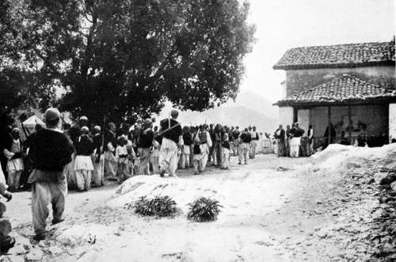

The Quest Of The Pelican : Albania. Part 4
Description
This section is from the book "Bird-Hunting Through Wild Europe", by R. B. Lodge. Also available from Amazon: Bird-Hunting Through Wild Europe.
The Quest Of The Pelican : Albania. Part 4
In Albania there is very little protection from law either for life or property. You have to protect yourself, and nobody moves outside the towns, and not often inside, without being armed. While in Scutari, the secretary to the Austrian Consulate dined with me one evening at my hotel. During dinner he talked much of the safety of the town, and declared that all statements as to its insecurity and danger were greatly exaggerated. When it was time to go he suddenly disappeared, and after some time we found him trying to borrow a revolver from the landlord to go home with, as he had forgotten his own ! He positively refused to go home without one, though he had barely 100 yards to go to reach his own house. In fact, it wasn't much more than across the road.
Bribery is rampant among the officials, from the highest to the lowest, and murder can be committed with impunity as far as arrest or trial is concerned, provided the murderer can take a sufficient backsheesh to the authorities. There is some excuse, therefore, for the custom of the vendetta which obtains here universally. Everybody avenges his own injuries, as well as protects his own life. In the event of a murder the friends and relatives are bound in honour to exact another life for the blood that has been shed. If the actual offender can be slain, why, so much the better; but sooner than have nothing to show in revenge they will kill the nearest relative they can get at. In this way it is dangerous to be one of a large family, because if your brother should kill anybody and escape you may have to pay the penalty. Among some of the mountain tribes it is allowable to kill anybody from the same village. Probably this is a practical equivalent to killing a relative, for the mountaineers have a tribal system something like the old Scottish clans, and all are probably related to one another. Thus an injury to one is avenged by the whole clan ; and as many of these clans number some thousand rifles, the organization is powerful enough to cause some hesitation in offending any of its members.
I heard of men who had been prisoners in their own houses for years, unable to go outside for fear of being shot at sight. One man had sworn to be avenged on the body of his father some years previously. Up to last year he had killed twenty-four people. I don't know if he is still alive, and if so what the tale of vengeance now amounts to ; but he is sure to be killed himself some day, and could hardly have survived as long as he has but for the fact of his being rich and powerful, with a large following.
Houses in the country are commonly loopholed for musketry, and provided with a watch-tower ; and several times I have found a body of armed retainers in attendance upon men over whom hung the threatened vengeance of a blood-feud. It is difficult to imagine such a state of things existing in the twentieth century.
Armed Albanian Congregation At Open-Air Service : Every Man With Rifle On His Back
It is quite common to see farmers ploughing their lands with a loaded rifle slung over the shoulder; and even on the way to church the men all go armed. No doubt there is a close time observed for the actual service, and probably for a certain distance from the church or open-air meeting ; but beyond that there would be no scruple in shooting down an enemy. The majority of the people, especially in the mountains, are Roman Catholics, and very devout so far as the wearing of beads and crosses, and the observance of fasts. Beyond that there is not much difference between the Christians and the Mohammedans. The Greek Church, too, has a large following.
Their chief virtue is that of most savage and uncivilized, or half-civilized, races, hospitality. On riding up to a house the head of the family, if he is in-if not, his wife-comes out and welcomes you, and takes your rifle, which is hung up on the wall. This is a sign that you no longer need to defend yourself, and that he makes himself responsible for your safety. And as a matter of fact, you are then perfectly safe, and he will protect you at the risk of his own life. For the killing of a guest while under his protection can only be avenged with blood, although in certain cases I believe money can be accepted without loss of honour as compensation for the death of a relative. You are then ushered into the house, where a dyed sheepskin rug is spread in the place of honour, near the fire of logs which burns in the middle of the floor. A cigarette is rolled and handed to you, while coffee is prepared and brought in on a tray in tiny cups-genuine Turkish coffee, very sweet and thick, and of course without milk. How the taste for it grows on one after a short sojourn in these countries! Unless the people are very poor, raki is also produced, and sour milk or cream cheese.
In the mountains I was told that a guest is passed on from one village to another, perhaps conducted by a child, with a password or a recommendation. But very few travellers have penetrated to the higher mountains. There the Albanian mountaineer, as wild and rugged, not to say as savage, as his native mountains, exercises undisputed sway, untroubled by any other authority, Turkish or otherwise. For though nominally under Turkish rule, this is of no practical value beyond the fertile lowland country and the towns. There it is confined to exacting as much money as possible and to doing as little as possible in return. The officials, from the governors and valis downwards, obtain their places by bribes. On payment of a certain sum down one is nominated governor, or what not. The first necessity, once he is in power, is to get back this sum, then to amass as much more as he can as quickly as possible. Well he knows the time and opportunity is short, for soon some other official will be making a bid for the post, and he will be shelved to make room for him. Then, unless he has acquired sufficient for another post elsewhere, he will be left without employment. A nice picture truly, and a nice state of things !
Continue to:
- prev: The Quest Of The Pelican : Albania. Part 3
- Table of Contents
- next: The Quest Of The Pelican : Albania. Part 5